Abstract
Cross-modal optical–SAR registration is a bottleneck for disaster response with remote sensing. Modern image matchers, however, are developed and benchmarked almost exclusively on natural images. We evaluate twenty-four pretrained matcher families on SpaceNet9 and two additional cross-modal benchmarks. Every matcher runs zero-shot, with no fine-tuning or domain adaptation on satellite or SAR data, under a deterministic protocol with tiled large-image inference, robust geometric filtering, and tie-point-grounded metrics.
Transfer is asymmetric. Matchers with explicit cross-modal training do not uniformly outperform those without it. XoFTR, trained for visible–thermal matching, and RoMa reach the lowest mean error of 3.0 px on the labeled SpaceNet9 scenes. RoMa does this without any cross-modal training, and MatchAnything-ELoFTR (3.4 px), trained on synthetic cross-modal pairs, matches closely. A working hypothesis is that foundation-model features (DINOv2) carry a modality invariance that partially substitutes for explicit cross-modal supervision. 3D-reconstruction matchers (MASt3R, DUSt3R) are not designed for 2D matching. They are highly protocol-sensitive and remain fragile under default settings.
The deployment protocol matters as much as the matcher. Choices of geometry model, tile size, and inlier gating shift accuracy by up to 33× for a single matcher, sometimes more than swapping matchers entirely within the evaluated sweep. Affine geometry alone reduces mean error from 12.34 to 9.74 px.
Results on SpaceNet9
The table ranks the top matchers on SpaceNet9 under one fixed protocol (affine geometry, 512 px tiles, 256 px overlap, 1024 px max side, RANSAC threshold 3.0 px, at least 4 inliers). Each row reports the best normalization for that matcher.
| Matcher | Norm | Mean err (px) ↓ | S@5 ↑ | S@10 ↑ | Fail ↓ |
|---|---|---|---|---|---|
| RoMa | Z-score | 3.0 | 78.9 | 94.2 | 0.00 |
| XoFTR | Percentile | 3.0 | 78.4 | 90.5 | 0.00 |
| RoMa + LoFTR | Percentile | 3.3 | 75.9 | 90.1 | 0.00 |
| MA-ELoFTR | Z-score | 3.4 | 71.2 | 93.3 | 0.00 |
| MINIMA-RoMa | Percentile | 3.4 | 66.6 | 79.6 | 0.00 |
| RoMaV2 | Z-score | 3.6 | 69.2 | 90.2 | 0.00 |
| GIM-DKM | Z-score | 4.1 | 57.6 | 85.6 | 0.00 |
| SuperPoint-LG | Z-score | 4.4 | 65.4 | 77.6 | 0.00 |
| ALIKED-LG | Percentile | 4.5 | 62.2 | 84.8 | 0.00 |
| MASt3R | Identity | 4.5 | 60.9 | 80.9 | 0.00 |
| LoFTR | Identity | 5.1 | 54.4 | 81.0 | 0.00 |
Mean error in pixels; S@5 and S@10 in percent; failure rate in [0,1].
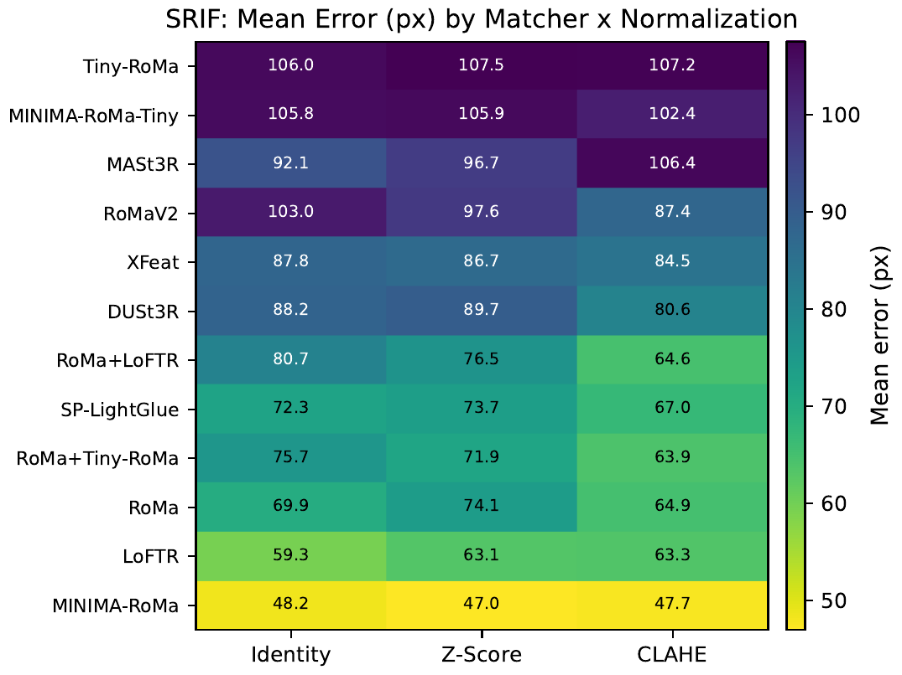
Protocol sensitivity
The same matcher can move from competitive to broken under different deployment settings. We sweep 16 protocol configurations per matcher on SpaceNet9 (64 total runs). The spread across configurations is often comparable to or larger than the differences between matchers. Affine geometry outperforms homography (9.74 vs 12.34 px mean error), and the best configuration reaches 7.2 px mean error with 0.802 Success@10 and no failures.
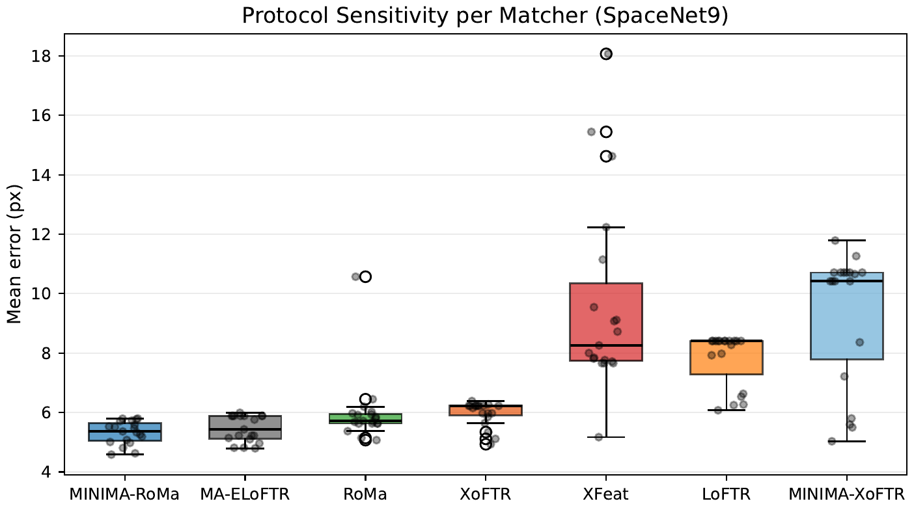
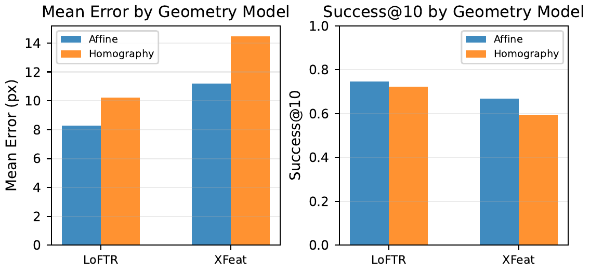
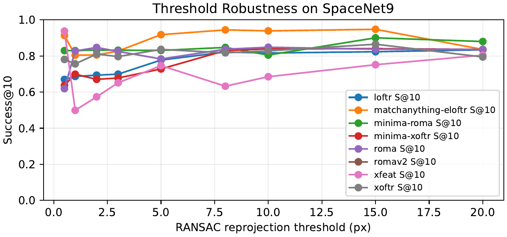
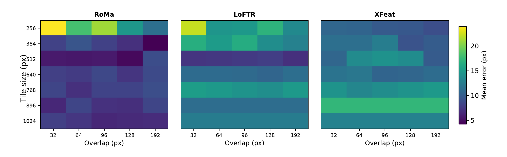
Correspondence gallery
Same crop, different matcher, on SpaceNet9 scene 03_01. Green lines are affine-RANSAC inliers; orange lines are outliers.
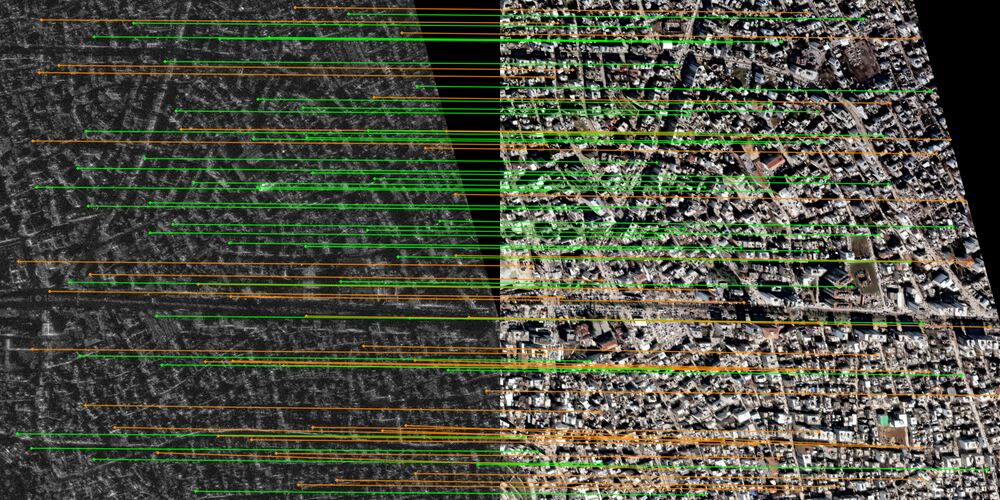
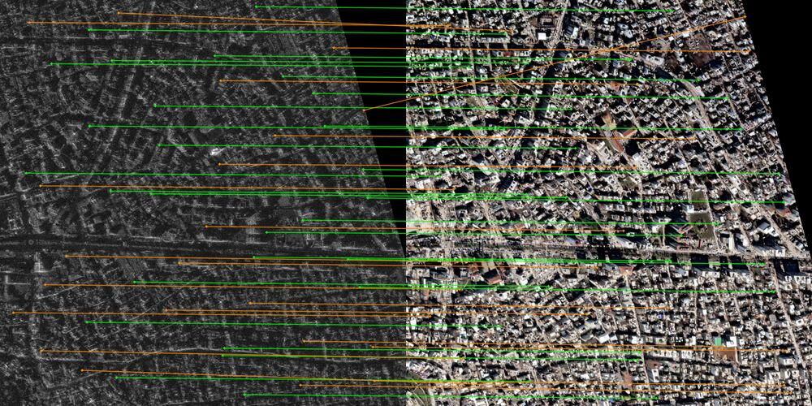
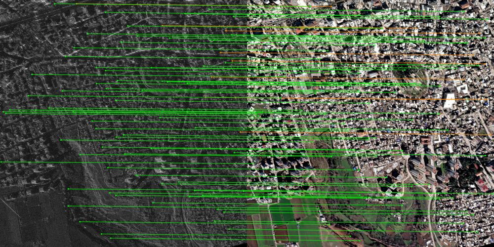
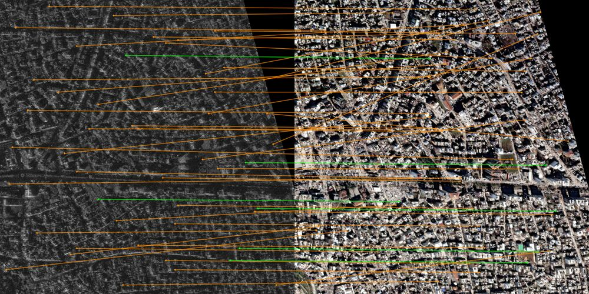
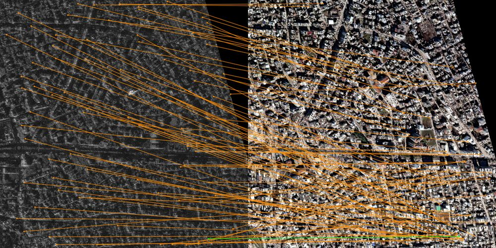
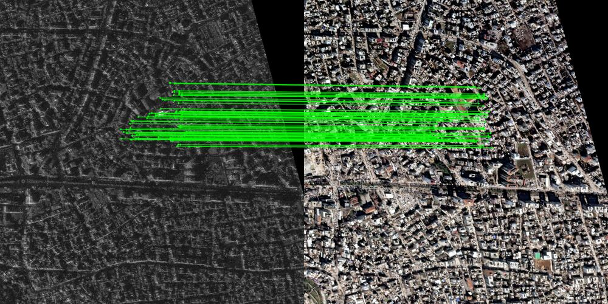
Reproduce
The code, data manifests, and protocol configurations are on GitHub. The full sweep ran on a single RTX 3090. Python 3.12 or newer; CUDA recommended.
# clone and install git clone https://github.com/isaaccorley/rsim.git cd rsim && make install # run one matcher on SpaceNet9 with the paper's default protocol uv run python -m rsim.spacenet9_matcher_benchmark \ --device cuda \ --matchers roma \ --tile-size 512 --tile-overlap 256 \ --max-side 1024 \ --normalizations zscore # reproduce all results, figures, and tables end-to-end uv run python scripts/run_protocol_sweep_top_matchers.py --device cuda uv run python scripts/generate_paper_assets.py
Citation
@InProceedings{Corley_2026_CVPR,
author = {Corley, Isaac and Stoken, Alex and Berton, Gabriele},
title = {Are Pretrained Image Matchers Good Enough for SAR-Optical Satellite Registration?},
booktitle = {Proceedings of the IEEE/CVF Conference on Computer Vision and Pattern Recognition (CVPR) Workshops},
month = {June},
year = {2026},
pages = {78-87}
}